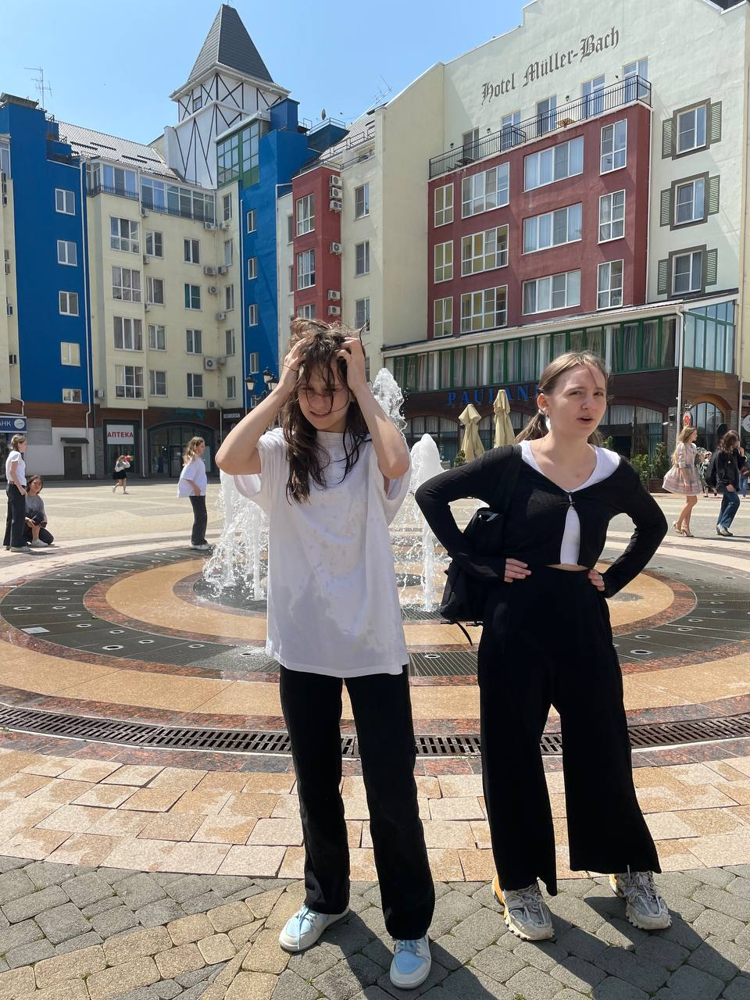
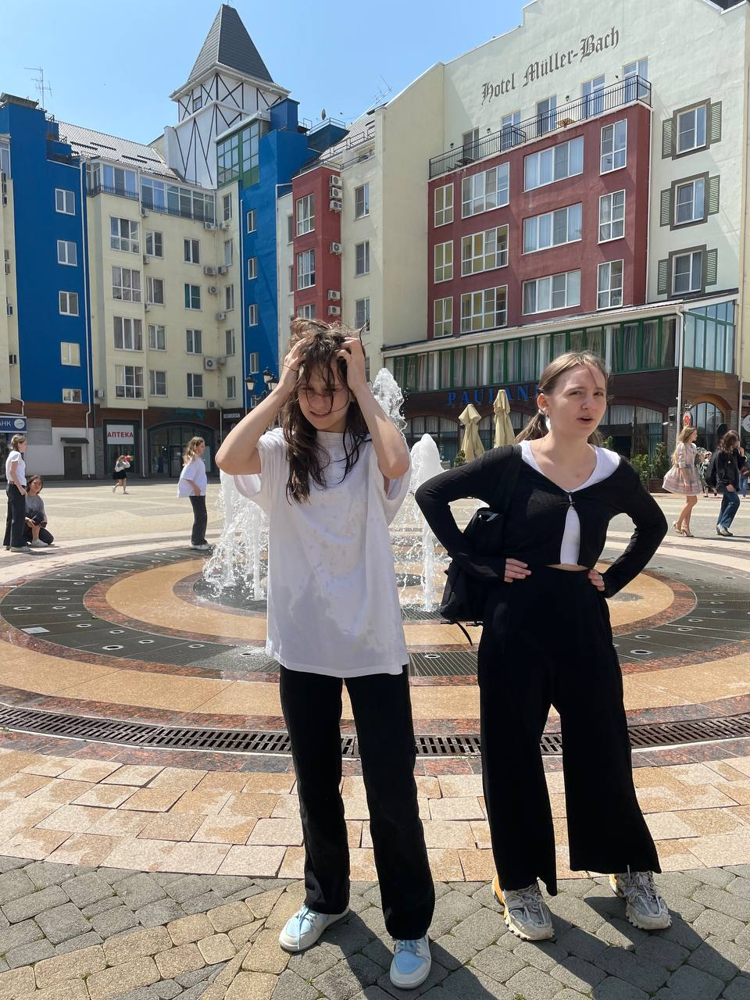
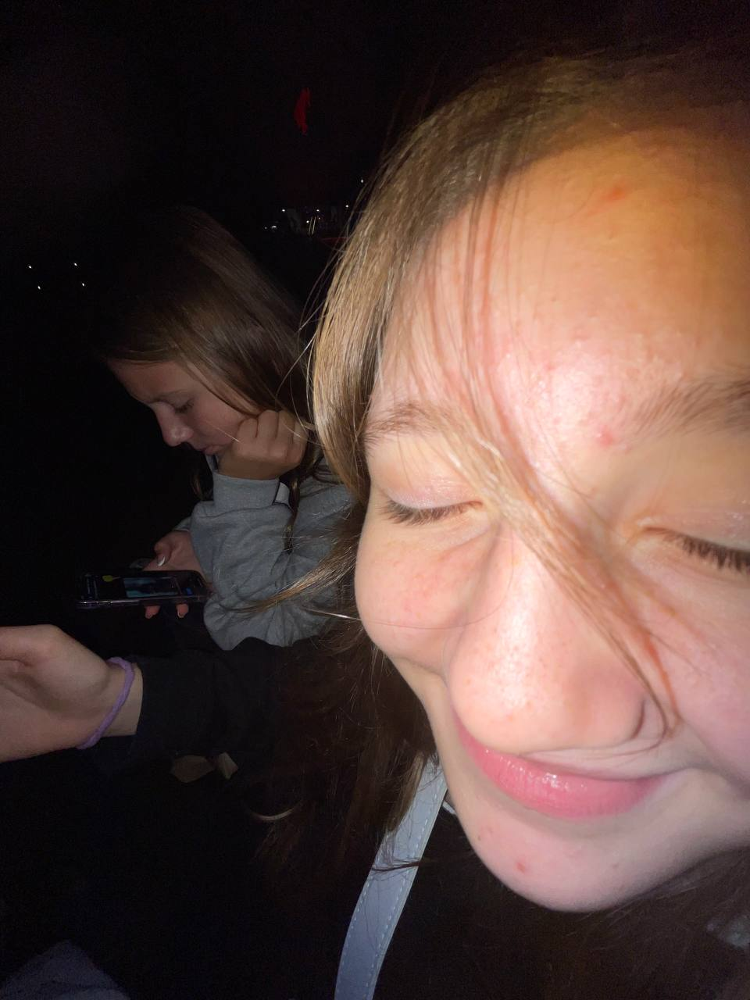
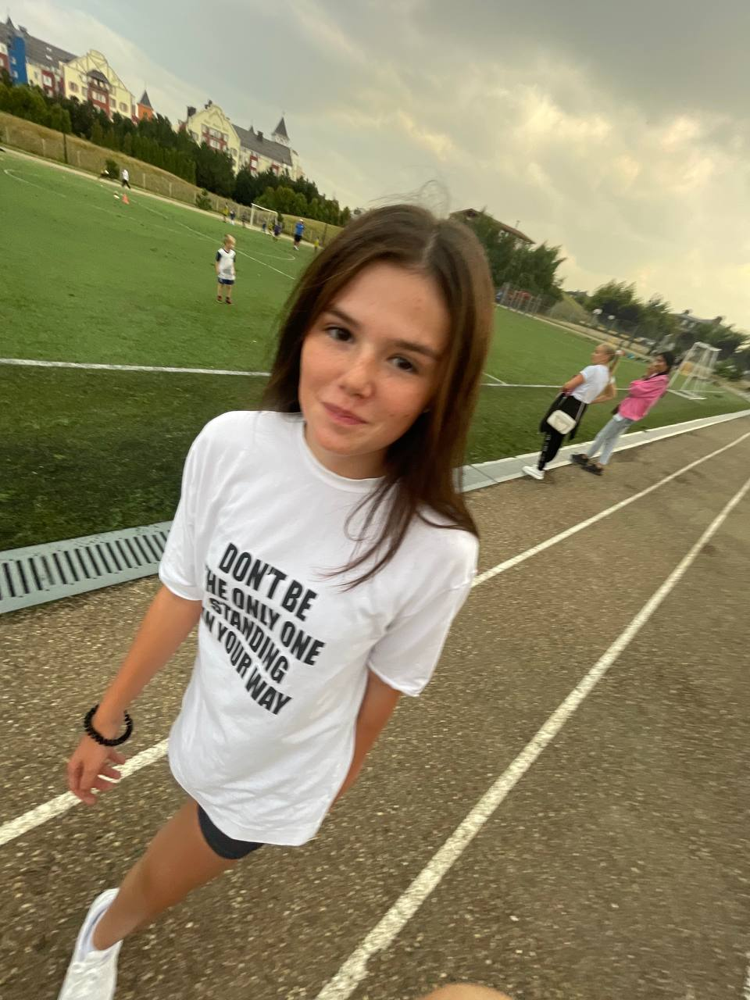
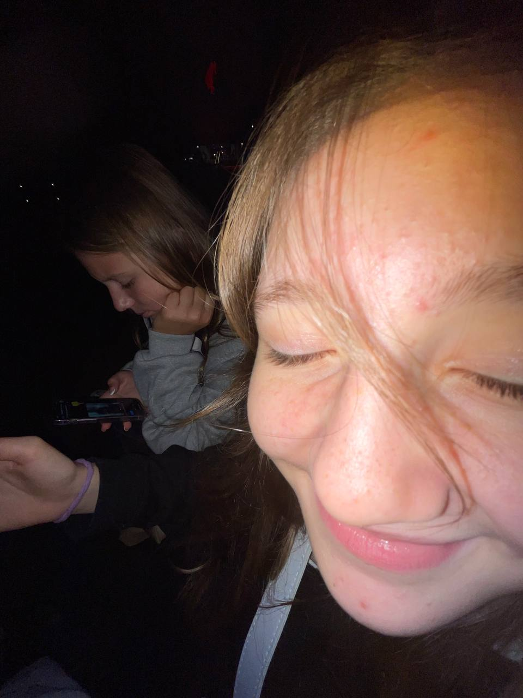
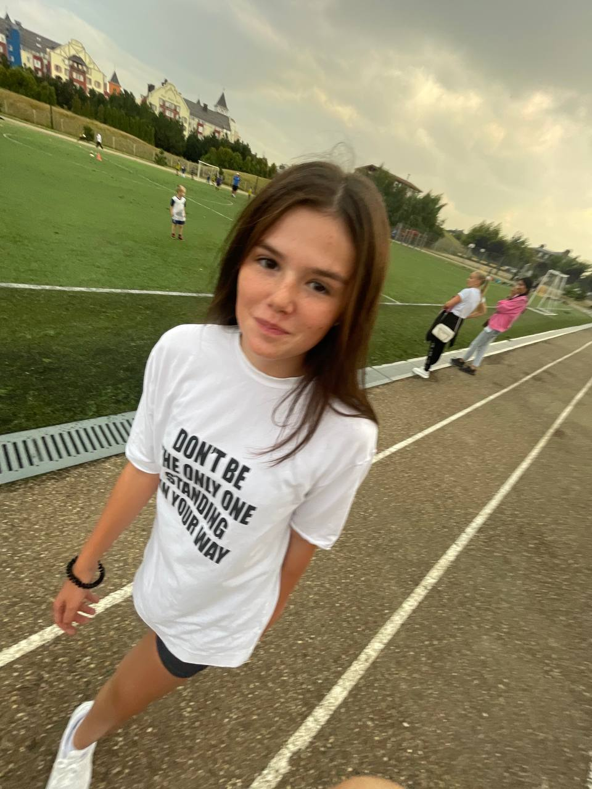
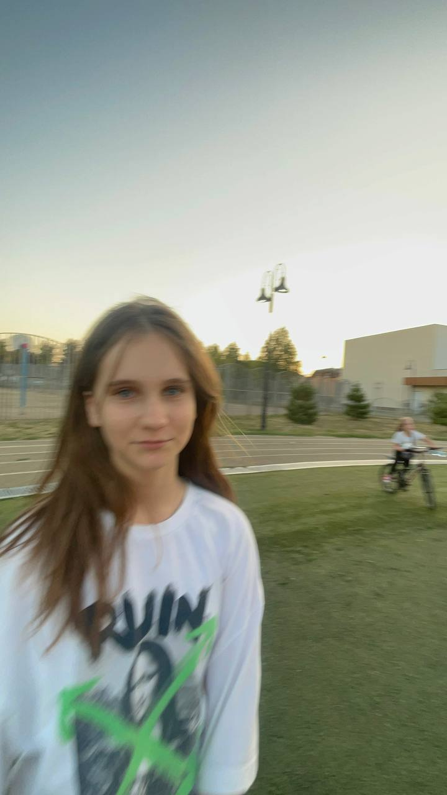
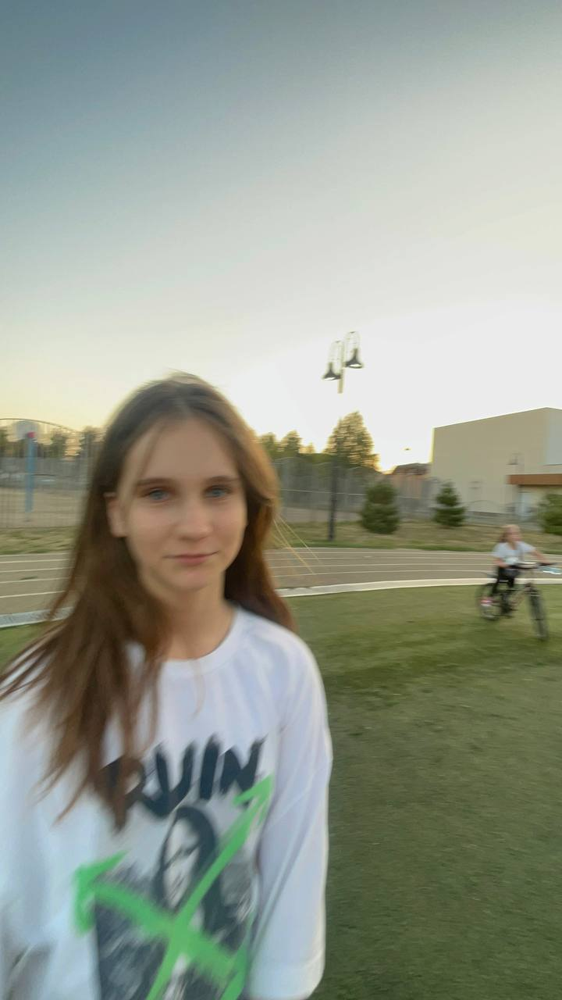

- Потому что каждый в нашей семье выполняет какую либо роль. Кто то папа, а кто то псина.
- Потому что у нас есть постоянный состав, и общий чат где мы общаемся, иногда там проходит семейный совет, где обсуждаются очень важные проблемы!
- Потому что у нас очень дружный коллектив(кроме некоторых) и мы гуляем :)
- Потому что семья построена не только вокруг Боба, но и у нас есть его дружбаны, и у самого боба есть подружка и мы следим за их отношениями)
- Ну и потому что все хотят вступить в нашу семью, хотя мы и не спрашивали. Ну они сто проц хотят!
- Андрей(крестный) Он псина. доп роль: пес семьи боба
- Кристина(тетя) доп роль: дочь жанны, юры. сестра кирилла, таира
- Кирилл(папа) официальный бездарь семьи. доп роль: сын жанны, юры. Брат таира и кристины
- Таир(дядя) Главный музыкант и оператор. доп роль: сын жанны, юры. брат кристины и кирилла
- Камилла(крестная) доп роль: подруга алены
- Санек(дед) доп роль: муж алисы, отец алены
- Алиса(бабушка)доп роль: мама алены, жена саши
- Алена(мама)дочь алисы и саши
- Жанна(бабушка по папиной линии) доп роль: мама кристины, таира, кирилла
- Вика(Основатель) доп роль: няня
- Алена. Короче полметровка, которая мама желтого аболтуса. Что то постоянно агрится на меня, хотя я хз почему. Ну короче вроде она норм. Общая оценка: удовлетворительно!
- Вика. Основатель семьи желтого аболтуса, все считают ее няней, но она злится, когда ее так называют. Ну короче еще дылда она. Общая оценка: норм
- Кирилл. Главный бездарь и подсос семьи. Носит очик и имеет шикарные формы, которым все завидуют) ну еще он типа папа, но я его не признаю. Общая оценка: подсос/10
- Камилла. Главная снежинка семьи и бывшая девушка злого пердуна. В семье она крестная и она лп мелиссы!Общая оценка: более менее
- Жанна. Старейшина семьи и многодетная мать. я так думаю, что про нее сказать нечего, кроме того, что сливы которые ты нам давала были вкусные. Общая оценка:7/10
- Алиса. Другая бабушка. ну еще короче она жена лысого аболтуса. Общая оценка:7/10
- Саша. Лысый аболтус и еще он дед, муж алисы и батя алены. Общая оценка: шалтай болтай из 10
- Таир. Это он писал то что вы сейчас читаете. Ну я короче дядя боба сын жанны и брат кристины и кирилла. Главный оператор и музыкант! Общая оценка гитарист из 10
- Кристина. Короче она тетя боба. Дочь жанны, моя сестра и еще она сестра кирилла. ну вообщем пон. Общая оценка 6 из 10
- Андрюха в жопе муха. Крестный боба и главный пес семьи. ну еще у него что то ноги сильно волосатые, а у меня нет((((( общая оценка: волосатая нога из 10
- НУ и мелисса. Любовница боба. Ну вообщем она из мультика "Тайная жизнь домашних животных" Ну вообщем она крутая, но жанна ее потеряла, надеюсь эта растеряша найдет ее( Общая оценка 100 из 10
- ну и боб! главный жнлтый аболтус семьи ну и просто крутой чувак!Общая оценка 999999999999999999999999 из 10
Вы готовы???????
ТОЧНО ГОТОВЫ?
Прям точно точно готовы?????
ну тогда вот:
 

 



 
